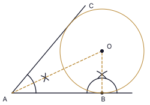
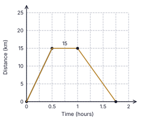
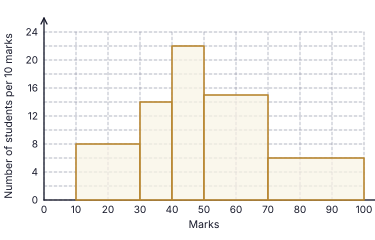
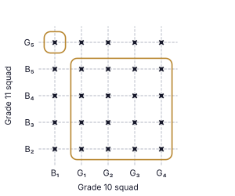
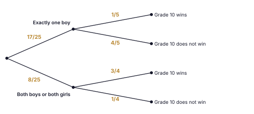

1. 12 × 10 = 120 worker-days; workers needed for 6 days = 120 ÷ 6 = 20; extra workers = 20 − 12
Final answer: 8 workers
(2 marks)2. Through E draw a line parallel to AB: ∠BAE + ∠ECD = ∠AEC, so ∠BAE = 100° − 35°
Final answer: 65°
(2 marks)3. LCM of the denominators = 12x: 5 × 6 + 7 × 4 − 1 × 312x = 30 + 28 − 312x
Final answer: 5512x
(2 marks)4. The faces of a right triangular prism are 2 triangles and 3 rectangles (a square is a special rectangle); a rhombus that is not a square cannot occur.
Final answer: (ii)
(2 marks)5. 20° ↔ 30 kg, so 1° ↔ 1.5 kg; angle of R = 360° − 180° − 20° = 160°; quantity = 160 × 1.5
Final answer: 240 kg
(2 marks)6. ADBE is cyclic: ∠ADB = 180° − 124° = 56°. DC passes through the centre and the midpoint of AB, so DC ⟂ AB and DA = DB; DC bisects ∠ADB: ∠CDB = 56° ÷ 2
Final answer: 28°
(2 marks)7. 5(x2 − 9) = 5(x2 − 32)
Final answer: 5(x + 3)(x − 3)
(2 marks)8. lg 70 = lg (7 × 10) = lg 7 + lg 10 = 0.8451 + 1
Final answer: 1.8451
(2 marks)9. a is marked between the dashed horizontal through B and BC (below it); b is marked at C between CA (ground) and CB. The dashed horizontal through B ∥ AC, so a and b are alternate angles.
Final answer: a = b (alternate angles)
(2 marks)10. h = 6r: curved surface : base = 2πr(6r) : πr2 = 12πr2 : πr2
Final answer: 12 : 1
(2 marks)11. Total outcomes = 4 × 4 = 16; sum 10: (2, 8), (8, 2), (5, 5) → 3 outcomes
Final answer: 316
(2 marks)12. BA = BD: ∠BDA = 40°, so ∠DBC = 40° + 40° = 80° (exterior angle). DB = DC: ∠DCB = 80°. In △ADC: x = 180° − 40° − 80°
Final answer: 60°
(2 marks)13. A = {2, 3, 5, 7}, B = {1, 3, 5, 7, 9}; A ∪ B = {1, 2, 3, 5, 7, 9} (n = 6), A ∩ B = {3, 5, 7}
Final answer: (ii)
(2 marks)14. 24x4y58x2y
Final answer: 3x2y4
(2 marks)15. r = (−18) ÷ (−6) = 3; T5 = T3 × r2 = −18 × 9
Final answer: −162
(2 marks)16. ∠BDC = ∠BAC = 41° (angles in the same segment); ∠ADB = ∠BDC = 41°, so ∠ADC = 82°. ∠CBE = ∠ADC (exterior angle of a cyclic quadrilateral)
Final answer: 82°
(2 marks)17. HCF of 16, 24, 40 = 8; lowest power of x = x; lowest power of y = y
Final answer: 8xy
(2 marks)18. πr2h = 3850 × h, so πr2 = 3850; r2 = 3850 × 722 = 1225
Final answer: r = 35 cm
(2 marks)19. DB = AD = 3 cm; BC = 2 × DE = 8 cm (midpoint theorem); AE = √(3² + 4²) = 5 cm, so EC = AE = 5 cm. Perimeter = 3 + 8 + 5 + 4
Final answer: 20 cm
(2 marks)20. Gradient = 11 − 54 − 2 = 3; y − 5 = 3(x − 2)
Final answer: y = 3x − 1
(2 marks)21. ∠DAE = ∠BCD = 70° (opposite angles of a parallelogram); AE is a diameter, so ∠ADE = 90°; ∠AED = 180° − 90° − 70° = 20°; ∠DEF = 180° − 20°
Final answer: 160°
(2 marks)22. Amount at the end of year 1 = 44 100 − 2100 = 42 000; P × 105100 = 42 000, so P = 42 000 × 100105
Final answer: Rs. 40 000
(2 marks)23. CB = CD, so ∠CBD = (180° − 40°) ÷ 2 = 70°; AC ∥ BD gives ∠ACB = ∠CBD = 70° (alternate); ∠AEB = ½ ∠ACB
Final answer: 35°
(2 marks)24. 4x > 2 − 23 = −21, so x > −21/4 (= −5¼)
Final answer: −5, −4, −3, −2, −1
(2 marks)25. Bisect ∠BAC (join A to the point where the two arcs cross) and draw the perpendicular to AB at B (join B to the point where its arcs cross, and extend); the two lines meet at the centre O. (1 mark: bisector of ∠BAC completed; 1 mark: perpendicular at B completed and O marked at the intersection.)

Final answer: O = intersection of the angle bisector at A and the perpendicular at B
(2 marks)| (i) | |
| Remaining after food = 1 − 18 = 78 | 1 |
| (ii) | |
| Spent on other expenses = 27 × 78 = 14 of the money received (or remainder = 57 of 78) | 1 |
| Fraction remaining = 78 − 14 = 58 | 1 |
| (iii) | |
| 58 of the money received = 72 000, so money received = 72 000 × 85 = Rs. 115 200 | 1 |
| Food = 18 × 115 200 = Rs. 14 400; other expenses = 14 × 115 200 = Rs. 28 800 | 1 |
| (iv) | |
| Money received = Rs. 60 000 + 92% of the part of the salary above Rs. 60 000 | 1 |
| 115 200 − 60 000 = 55 200 = 92% of the excess, so excess = 55 200 × 10092 = Rs. 60 000 | 1 |
| Salary = 60 000 + 60 000 = Rs. 120 000 | 1 |
| (v) | |
| Food as a percentage of salary = 14 400120 000 × 100 | 1 |
| = 12% | 1 |
Total marks: 10
| (a)(i) — completed graph shown below | |
| Horizontal line from (0.5, 15) to (1, 15) (stay of 30 minutes) | 1 |
| Point (1.75, 0) correctly plotted (1 h + 45 min = 1.75 h) | 1 |
| Straight line from (1, 15) to (1.75, 0) joined | 1 |
| (a)(ii) | |
| Speed = distance ÷ time = 15 ÷ 0.75 (45 min = 0.75 h) | 1 |
| = 20 km h−1 | 1 |
| (b)(i) | |
| Length of arc AEB = 12 × 2 × 227 × 7 = 22 cm | 1 |
| Perimeter = 22 + 22 + 14 + 22 = 80 cm | 1 |
| (b)(ii) | |
| Area of rectangle = 14 × 22 = 308 cm2 | 1 |
| Area of semicircle = 12 × 227 × 7 × 7 = 77 cm2 | 1 |
| 308 ÷ 77 = 4 times | 1 |

Total marks: 10
| (i) | |
| Rates = 120 000 × 15100 | 1 |
| = Rs. 18 000 | 1 |
| (ii) | |
| Annual rent = 15 000 × 12 = Rs. 180 000; maintenance = 180 000 × 10100 = Rs. 18 000 | 1 |
| Remaining = 180 000 − 18 000 − 18 000 = Rs. 144 000 | 1 |
| (iii)(a) | |
| Number of shares = 10 800 ÷ 3 (dividend per share) | 1 |
| = 3600 shares | 1 |
| Total invested = 3600 × 50 = Rs. 180 000 | 1 |
| (iii)(b) | |
| Extra money added = 180 000 − 144 000 = Rs. 36 000 | 1 |
| Percentage = 36 000180 000 × 100 | 1 |
| = 20% | 1 |
Total marks: 10
| (i) | |
| Number of students = height × (class width ÷ 10) | 1 |
| 30 – 40: 14 and 40 – 50: 22 | 1 |
| 50 – 70: 15 × 2 = 30 and 70 – 100: 6 × 3 = 18 | 1 |
| (ii) | |
| Bars drawn with no gaps on the class boundaries 10, 30, 40, 50, 70, 100; heights of the first two bars 8 and 14 | 1 |
| Heights of the third and fourth bars 22 and 15 | 1 |
| Height of the last bar 6 (bars wider for wider classes) | 1 |
| (iii) | |
| Cumulative frequencies 16, 30, 52, 82, 100 (all correct 2 marks; at least 3 correct 1 mark) | 2 |
| (iv) | |
| Students with 50 or more marks = 30 + 18 = 48 (or 100 − 52) | 1 |
| Probability = 48100 = 1225 | 1 |
| Marks | Number of students | Cumulative frequency |
|---|---|---|
| 10 – 30 | 16 | 16 |
| 30 – 40 | 14 | 30 |
| 40 – 50 | 22 | 52 |
| 50 – 70 | 30 | 82 |
| 70 – 100 | 18 | 100 |

Total marks: 10
| (i) | |
| All 25 grid points marked with “×” (5 columns × 5 rows) | 2 |
| (ii) | |
| Closed curves around the 1 point (B₁ with G₅) and the 16 points (G₁, G₂, G₃, G₄ with B₂, B₃, B₄, B₅) | 1 |
| Number of favourable outcomes = 1 + 16 = 17 | 1 |
| Probability = 1725 | 1 |
| (iii) | |
| First branches: 1725 (exactly one boy) and 825 (both boys or both girls: 4 + 4 = 8 outcomes) | 1 |
| Second branches under “exactly one boy”: 15 (wins), 45 (does not win) | 1 |
| Second branches under “both boys or both girls”: 34 (wins), 14 (does not win) | 1 |
| (iv) | |
| P(does not win) = 1725 × 45 + 825 × 14 = 68125 + 10125 | 1 |
| = 78125 | 1 |


Total marks: 10